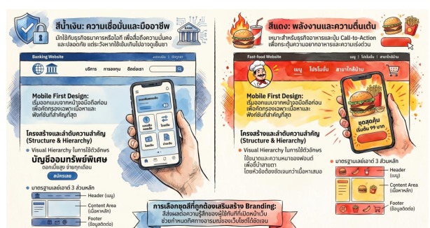

1. หลักการออกแบบเว็บไซต์
การออกแบบเว็บไซต์ไม่ใช่แค่เรื่องความสวยงาม แต่เป็นการวางแผนเชิงกลยุทธ์เพื่อสร้าง UI ที่ดีควบคู่กับ UX ที่ดี ซึ่งส่งผลต่อ Bounce Rate และ Conversion Rate ของธุรกิจ
- ทฤษฎีการใช้สี (Color Theory): สีมีผลต่ออารมณ์และการรับรู้ของผู้ใช้ เป็นเครื่องมือสื่อสารอัตลักษณ์แบรนด์ เช่น สีน้ำเงิน = ความน่าเชื่อถือ (ธนาคาร/IT), สีแดง = กระตุ้นความสนใจ (อาหาร/ปุ่ม CTA), สีเขียว = ธรรมชาติ/ปลอดภัย, สีดำ = หรูหรา/ทันสมัย นอกจากนี้ยังมีหลักการจับคู่สี เช่น สีคู่ตรงข้าม สีโทนเดียวกัน และสีข้างเคียง
- การเลือกใช้ตัวอักษร (Typography): ต้องคำนึงถึงทั้งความสวยงามและการอ่านง่าย (Readability) รวมถึงการเข้าถึงสำหรับทุกคน (Accessibility) โดยเช็ค Contrast Ratio ระหว่างตัวอักษรกับพื้นหลัง และใช้หลัก Visual Hierarchy ผ่านการกำหนด Size & Weight และ Spacing/White Space

2. องค์ประกอบและ Layout
แบ่งหน้าเว็บมาตรฐานเป็น 3 ส่วนหลัก:
- Header/Navigation Bar: โลโก้ เมนู ปุ่ม Login ช่องค้นหา ตามหลัก Information Architecture
- Content Area: พื้นที่แสดงเนื้อหาหลัก ตามหลัก Visual Flow (บนลงล่าง ซ้ายไปขวา)
- Footer: ข้อมูลติดต่อ นโยบายความเป็นส่วนตัว ลิงก์โซเชียลมีเดีย
3. ขั้นตอนการทำ Prototype
ก่อนเขียนโค้ดจริง ต้องทำแบบจำลองก่อน 2 ระดับ:
- Low-fidelity Wireframe: ร่างโครงสร้างง่ายๆ ด้วยเส้น/สีเทา เน้นตำแหน่งองค์ประกอบ (เปรียบเหมือนแบบแปลนบ้าน)
- High-fidelity Mockup: ใส่สี รูปภาพ ฟอนต์ ไอคอน ใกล้เคียงของจริง (เปรียบเหมือนการตกแต่งภายใน)
4. เทคนิคการออกแบบสมัยใหม่
- Responsive Design: ปรับการแสดงผลตามขนาดหน้าจออัตโนมัติ ใช้เทคนิค Flexible Grid, Flexible Images, CSS Media Queries
- Mobile First Design: ออกแบบจากหน้าจอมือถือก่อนแล้วขยายไปเดสก์ท็อป เน้น Content-First ลดปัญหา Feature Bloat